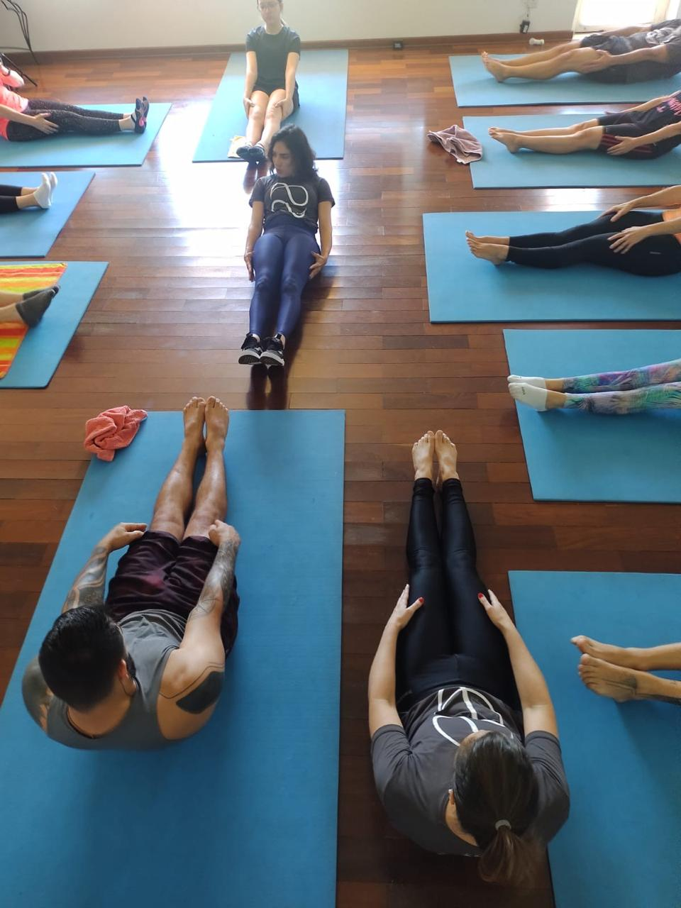
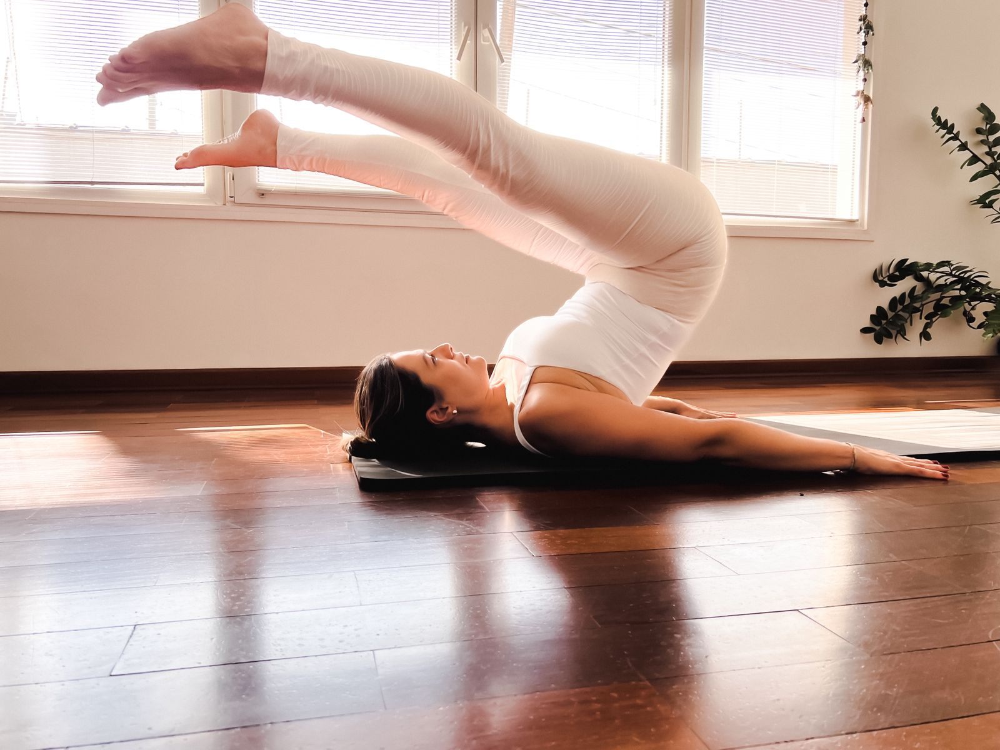
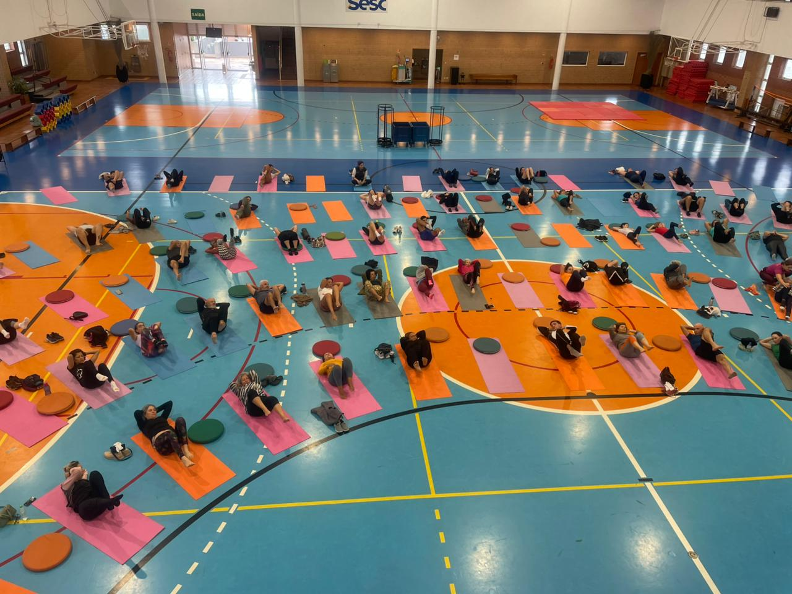
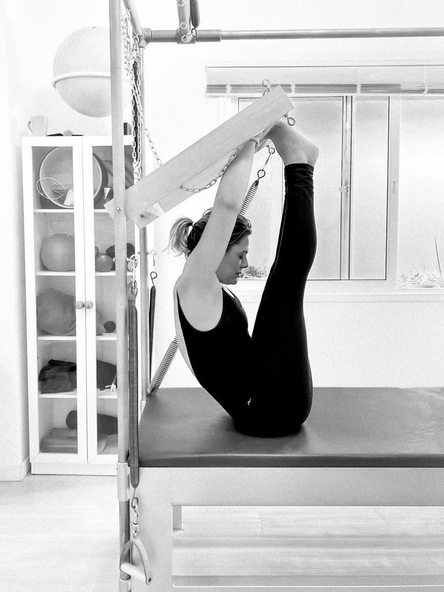
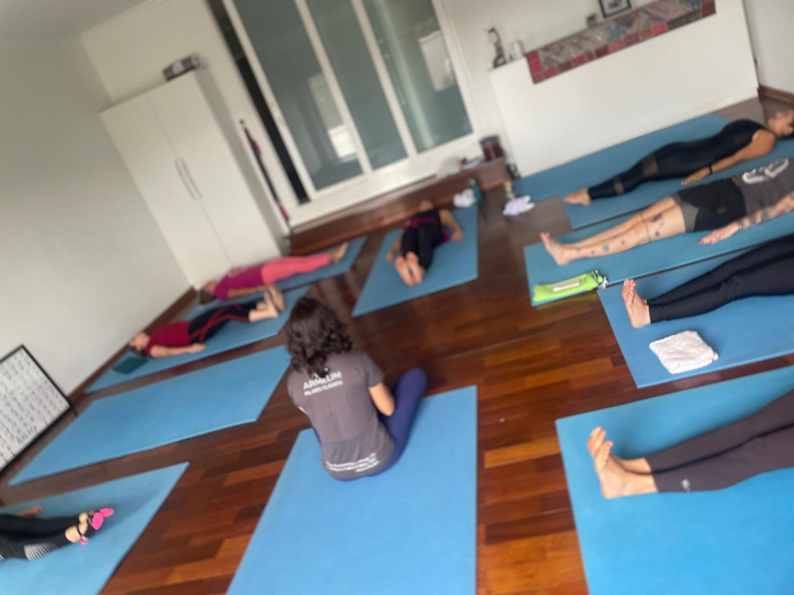
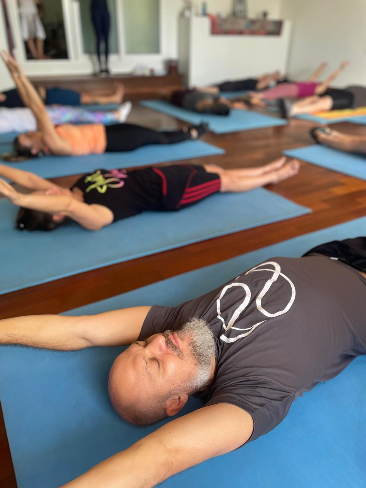
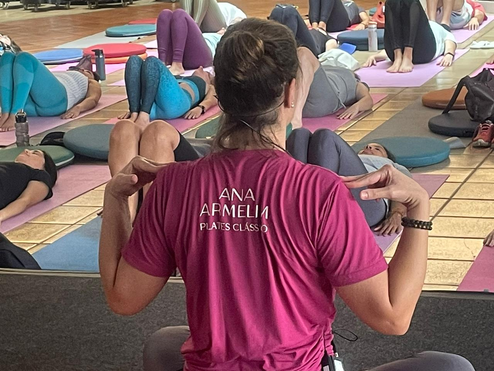
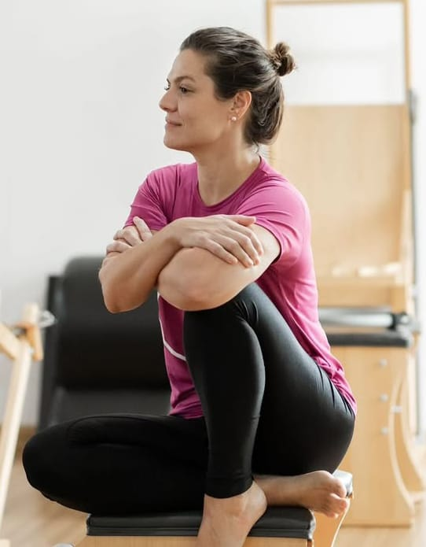
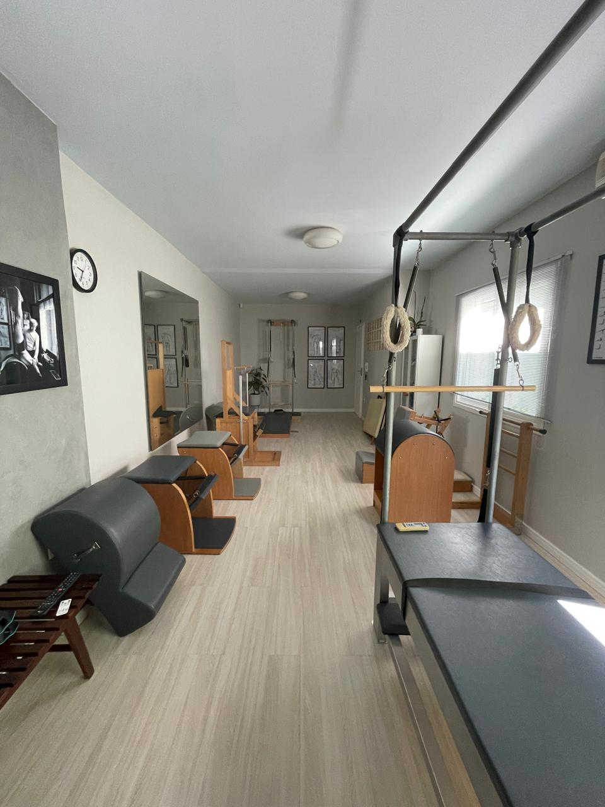
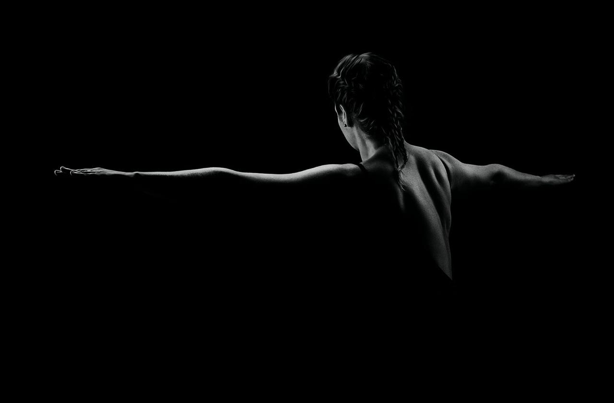

Pilates Clássico em Sorocaba | Jardim América | Campolim
Movimento inteligente, corpo forte e mente presente.
Aqui, a Contrologia é praticada na sua essência.








Inicialmente denominada Contrologia ou A Arte do Controle, o Pilates é um sistema de exercícios que combina Força, Controle e Flexibilidade. Em Sorocaba, o Studio Aurini é referência no ensino do Pilates Clássico fiel ao método original de Joseph Pilates.
Fiel aos ensinamentos de Joseph Pilates, preservando a essência da Contrologia. O único método que trabalha corpo e mente de forma integrada.
Cada gesto é um ato de cuidado, conectando corpo e mente através do movimento. Fortalecimento profundo, postura eficiente e bem-estar duradouro.
Mais de 15 anos dedicados ao ensino autêntico do Pilates Clássico em Sorocaba. Instrutoras certificadas, aparelhos originais e turmas reduzidas.
O Studio Aurini é referência em Pilates Clássico em Sorocaba, respeitando os princípios originais da Contrologia desenvolvida por Joseph Pilates. Atendemos alunos de todos os perfis: iniciantes, atletas, profissionais de saúde, pessoas em reabilitação e terceira idade.
Nosso objetivo é promover qualidade de movimento, fortalecimento profundo, postura eficiente e consciência corporal. Localizado no Jardim América, próximo ao Campolim e ao Shopping Iguatemi, na Zona Sul de Sorocaba — de fácil acesso para toda a região.
"Quando você volta para o corpo, tudo o que é seu se reorganiza."
Com um ambiente elegante e minimalista, aparelhos clássicos originais e equipe altamente qualificada, garantimos um treinamento técnico, seguro e transformador para cada aluno de Sorocaba e região.
Saiba Mais
Modalidades de Pilates Clássico em Sorocaba pensadas para o seu desenvolvimento individual
Aulas Privadas em Sorocaba
Duos (aulas em dupla)
Duração: 55 minutos
Pilates Clássico · Contrologia
Acessórios de qualidade
Cursos especializados
Pacotes de aulas
Formação profissional em Pilates
Vídeo-aulas exclusivas
Blog com artigos sobre Pilates
Dicas e tutoriais de Contrologia
Depoimentos de alunos reais
Profissionais dedicadas à excelência do ensino da Contrologia em Sorocaba
Fundadora & Instrutora Principal de Pilates Clássico
Fundadora do Studio Aurini, Ana Armelim é instrutora certificada de Pilates Clássico com mais de 15 anos de experiência em Sorocaba. Especialista em Contrologia, sua filosofia é baseada no princípio de que o movimento cura, e cada gesto é um ato de cuidado com o corpo e a mente.

Instrutora de Pilates Clássico
Instrutora de Pilates Clássico no Studio Aurini, Paula traz uma abordagem técnica e cuidadosa para cada aula em Sorocaba, respeitando o tempo de desenvolvimento de cada aluno e a essência da Contrologia.
Venha experimentar a autêntica Contrologia em Sorocaba. Agende sua primeira aula e descubra como o Pilates Clássico pode transformar sua vida. Atendemos no Jardim América, próximo ao Campolim.
Venha nos visitar no Jardim América, próximo ao Campolim e ao Shopping Iguatemi, na Zona Sul de Sorocaba.
Endereço:
Rua Bogotá, 25
Sorocaba –
SP
CEP 18046-000
Região:
Jardim América · Próximo ao Campolim
Shopping Iguatemi · Zona Sul de Sorocaba
WhatsApp:
(15) 99661-9682
Tire suas dúvidas sobre o Pilates Clássico em Sorocaba
Pilates Clássico, também chamado de Contrologia, é o método original criado por Joseph Pilates. Combina força, controle e flexibilidade em exercícios precisos que fortalecem o corpo de dentro para fora, melhoram a postura e promovem consciência corporal. No Studio Aurini, praticamos o método fiel à sua origem.
Sim! O Pilates Clássico é indicado para todas as idades e condições físicas: iniciantes, atletas, profissionais de saúde, pessoas em reabilitação, gestantes (com autorização médica) e idosos. O método se adapta ao ritmo e às necessidades de cada aluno.
O Pilates Clássico preserva a sequência original de exercícios criada por Joseph Pilates, com a ordem, o ritmo e a intenção do método. O Pilates Moderno é uma adaptação com variações e novas abordagens. No Studio Aurini, ensinamos o método original — a Contrologia — em sua essência.
É simples! Basta entrar em contato pelo WhatsApp (15) 99661-9682. Oferecemos aulas privadas e em duo com duração de 55 minutos no Jardim América, Sorocaba.
Sim! Além das aulas regulares, o Studio Aurini oferece cursos especializados e formação profissional em Pilates Clássico para profissionais de saúde e educação física de Sorocaba e região. Entre em contato para mais informações.
Estamos na Rua Bogotá, 25, Jardim América, Sorocaba – SP (CEP 18046-000). Próximo ao Campolim e ao Shopping Iguatemi, na Zona Sul de Sorocaba, de fácil acesso para toda a cidade.
Tire suas dúvidas ou agende sua aula experimental de Pilates Clássico em Sorocaba diretamente pelo WhatsApp
Falar pelo WhatsApp